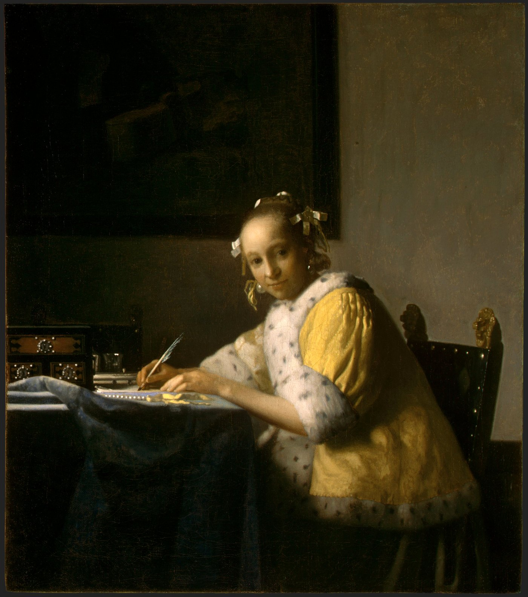
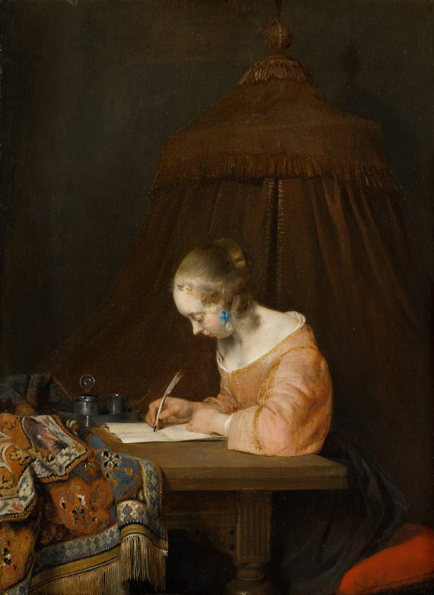
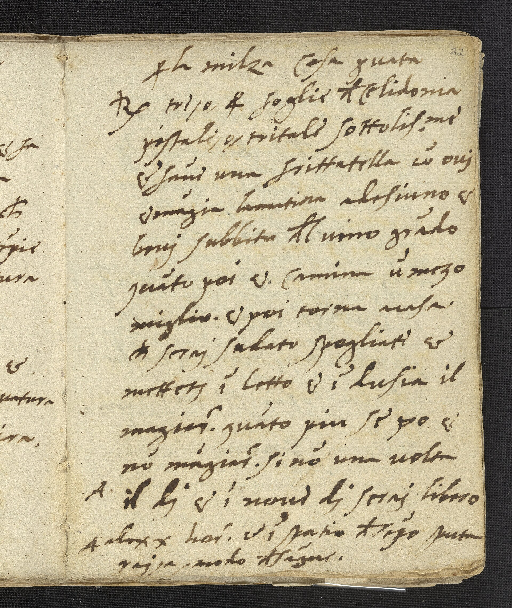
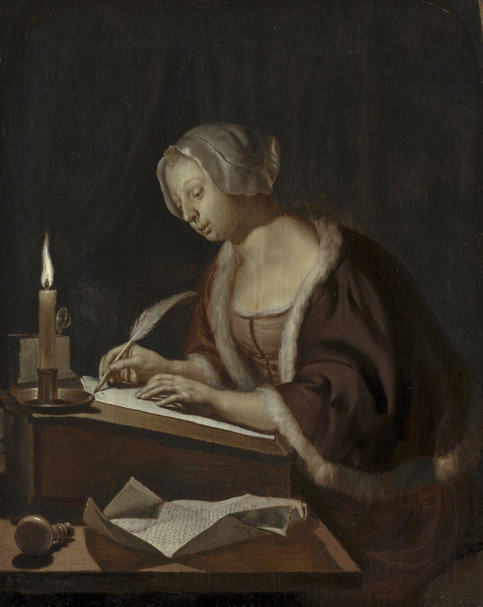
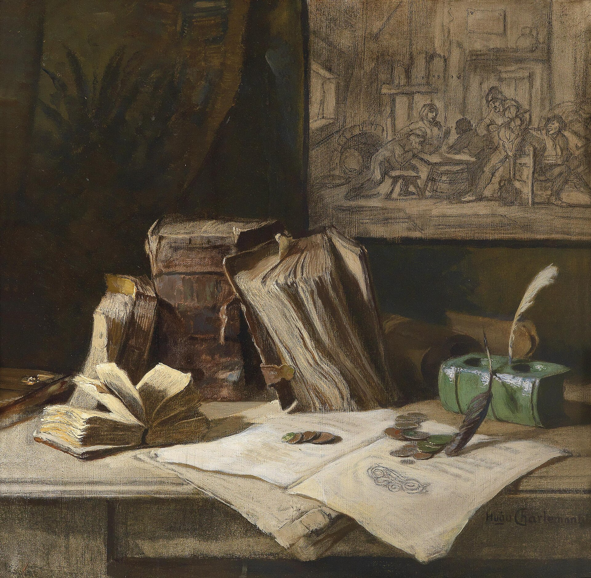
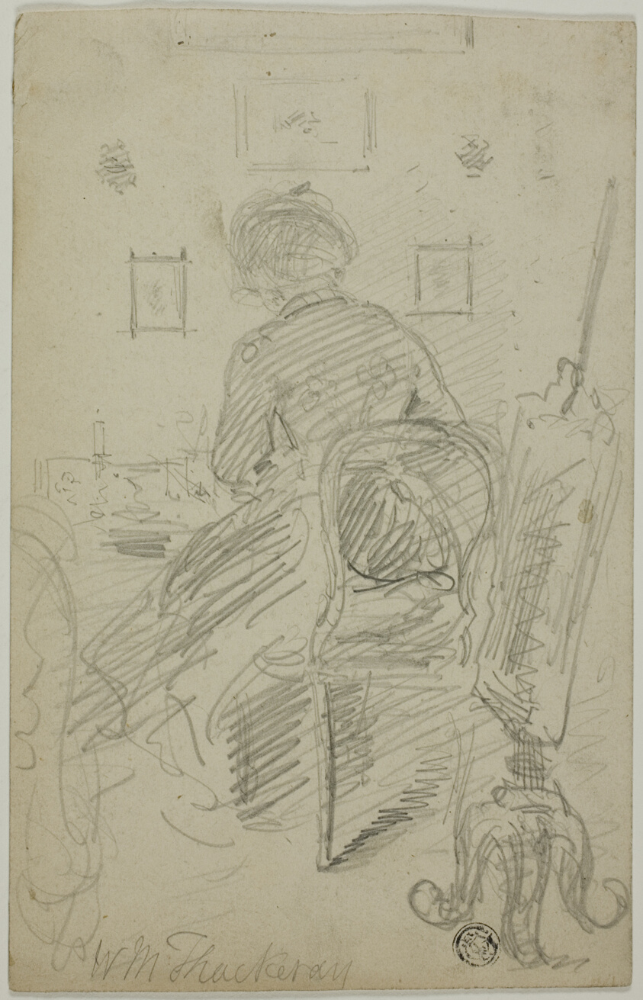
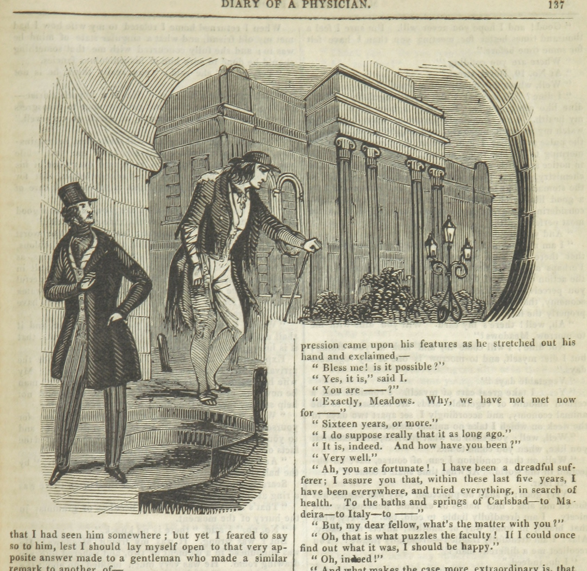
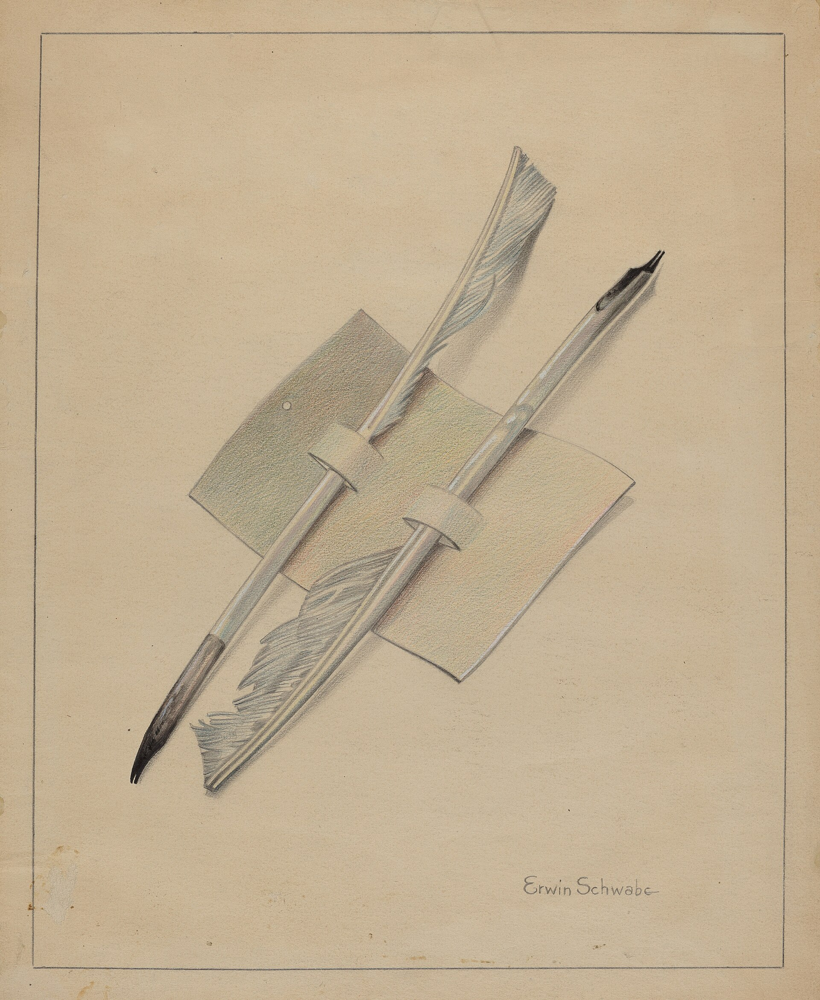

Write it.Ask it.

Quill is a notes app that answers from what you wrote, and shows you the notes it used.
Nothing changes without your yes.Undo anything for ten days.
Search your notes
Quill's search bar has one switch. Flip it and the same box becomes an agent that reads your notes and answers.
Things you can ask Quill
- Find what I wrote about LisbonQuill searches your notes by meaning and by exact words, reads the ones that match, and answers with their titles so you can open them.
- Summarize my thesis notesIt reads the notes in your thesis folder and writes a short summary, citing each note it drew from.
- Draft a packing list for LeedsThe draft opens as an unsaved tab in your dock. Nothing is stored until you press Save.
- Archive everything untitledYou get a list of every untitled note with a tick box each. Untick any you want to keep, then Apply once.
- Rename #reactz to #reactEvery note carrying the old tag is listed with the change it will get. Undo stays available for ten days.
- Group my college notesRelated notes are gathered into named groups, each a suggested folder you can accept or leave.
- What's in my folders?It lists your folders, what's inside each, and which tags you use most.
Quill would search your notes for that. Try “Lisbon”, “archive” or “draft”.
First you write it down.
A train time, a recipe, half an idea for chapter two. Quill keeps it, tagged and filed or not.
That's allowed. Notes pile up in folders inside folders, and that's fine too.
In plain words, the way you'd ask a friend who was there when you wrote it.
The answer comes from your notes, with the notes it came from, one tap away.
Notes, kept







